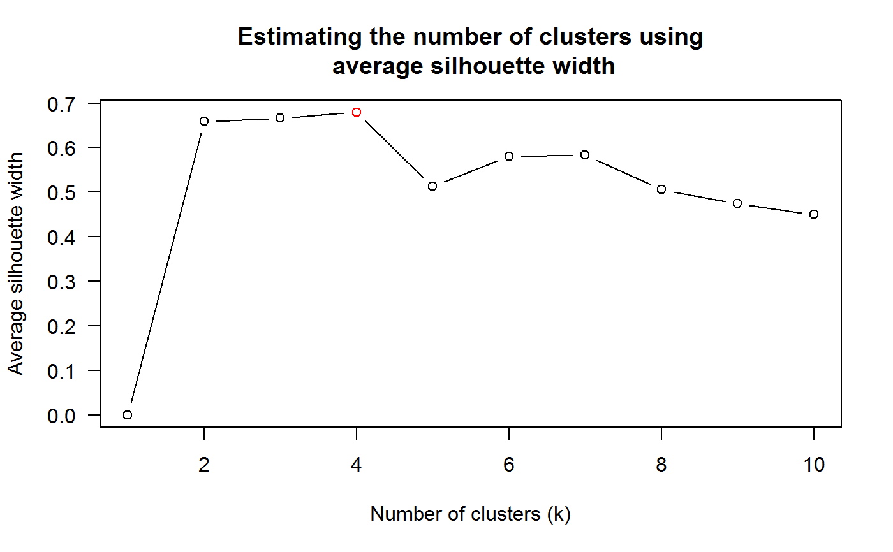
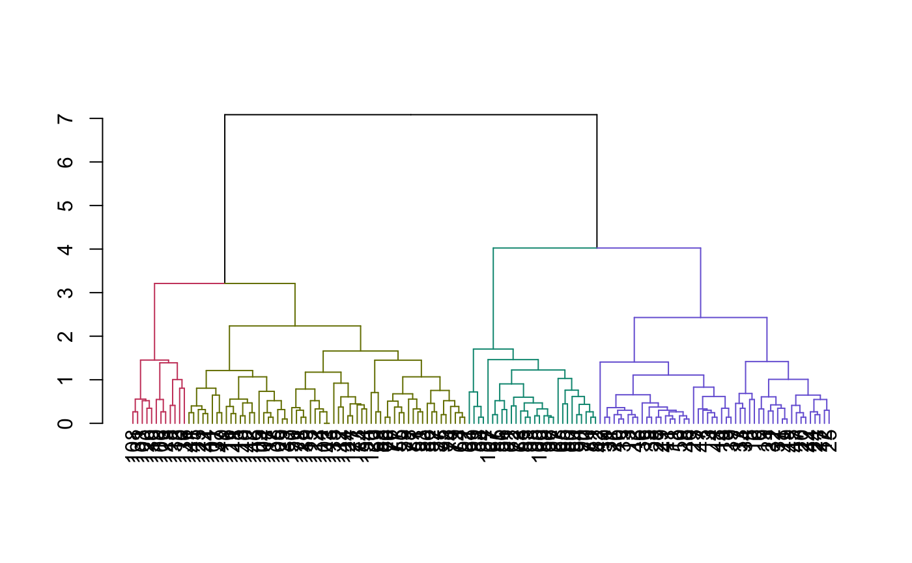
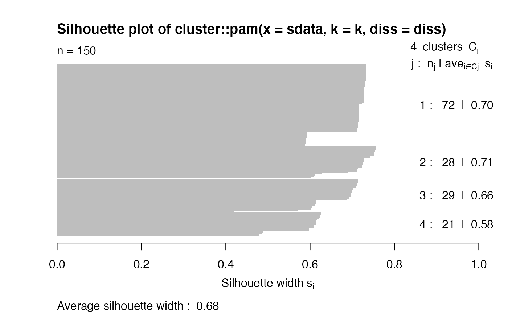
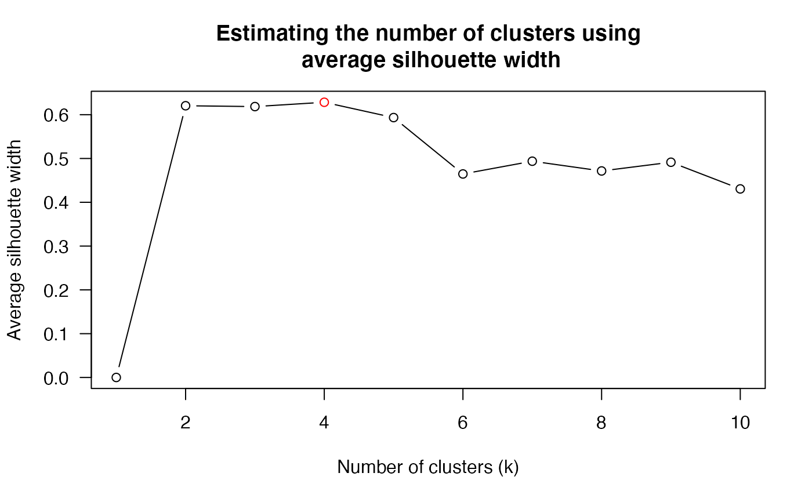

Find the (estimated) number of clusters for a dendrogram using average silhouette width
Source:R/find_k.R
find_k.RdThis function estimates the number of clusters based on the maximal average silhouette width derived from running pam on the cophenetic distance matrix of the dendrogram. The output is based on the pamk output.
find_k(dend, krange = 2:min(10, (nleaves(dend) - 1)), ...) # S3 method for find_k plot( x, xlab = "Number of clusters (k)", ylab = "Average silhouette width", main = "Estimating the number of clusters using\n average silhouette width", ... )
Arguments
| dend | A dendrogram (or hclust) tree object |
|---|---|
| krange | integer vector. Numbers of clusters which are to be compared by the average silhouette width criterion. Note: average silhouette width and Calinski-Harabasz can't estimate number of clusters nc=1. If 1 is included, a Duda-Hart test is applied and 1 is estimated if this is not significant. |
| ... | passed to pamk (the current defaults criterion="asw" and usepam=TRUE can not be changes). |
| x | An object of class "find_k" (has its own S3 plot method). |
| xlab, ylab, main | parameters passed to plot. |
Value
A pamk output. This is a list with the following components: 1) pamobject - The output of the optimal run of the pam-function. 2) nc - the optimal number of clusters. 3) crit - vector of criterion values for numbers of clusters. crit[1] is the p-value of the Duda-Hart test if 1 is in krange and diss=FALSE. 4) k - a copy of nc (just to make it easier to extract - since k is often used in other functions)
See also
pamk, pam, silhouette.
Examples
dend <- USArrests %>% dist() %>% hclust(method = "ave") %>% as.dendrogram() dend_k <- find_k(dend) plot(dend_k)